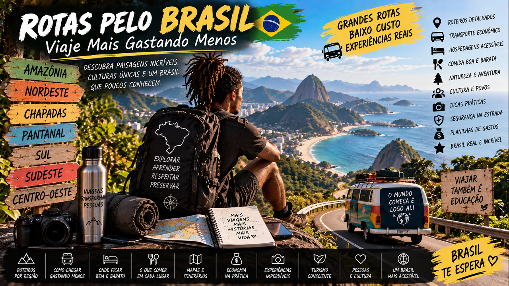

Viaje Mais Gastando Menos — aprenda a criar rotas econômicas, comparar transportes, escolher hospedagem e descobrir o Brasil com curiosidade e responsabilidade.
6 módulos24 aulasProjeto Minha Rota Brasil
0 de 24 aulas concluídas
Talvez a grande viagem esteja muito mais perto do que você imagina
O Brasil é grande o suficiente para uma vida inteira de descobertas. Este curso ensina a transformar vontade de viajar em rotas possíveis: menos pressa, mais planejamento, transporte inteligente, hospedagem consciente, cultura local e orçamento que cabe na realidade.

01
O Brasil cabe em muitas viagens
Aprenda a enxergar o país como um continente de rotas, culturas e paisagens, sem precisar começar por viagens caras.
Aula 01
Viajar começa perto
Muita gente associa viagem a avião e exterior, mas o Brasil oferece experiências completamente diferentes dentro do mesmo país. Uma primeira rota pode começar por cidades próximas, parques, comunidades, serras ou litoral alcançáveis por transporte terrestre.
Pensar em distância progressiva reduz custo e insegurança. Você aprende a organizar mochila, orçamento e deslocamento antes de enfrentar trajetos maiores.
Atividade prática
Marque no mapa cinco destinos a até 300 km da sua cidade que você gostaria de conhecer.
Aula 02
Cinco regiões, muitos Brasis
Norte, Nordeste, Centro-Oeste, Sudeste e Sul agrupam territórios enormes e internamente diversos. Amazônia, sertão, cerrado, pantanal, mata atlântica, pampas, serras e litorais criam experiências distintas.
Não transforme regiões em estereótipos. Pesquise história, povos, culinária e ecossistemas específicos de cada destino.
Atividade prática
Escolha uma região diferente da sua e liste cinco aspectos que gostaria de aprender presencialmente.
Aula 03
Rota é mais que destino
Uma viagem pode ser desenhada como sequência de lugares conectados. Em vez de comprar vários deslocamentos isolados, você observa cidades intermediárias, linhas terrestres e atrações ao longo do caminho.
Uma boa rota equilibra deslocamento e permanência. Passar a maior parte do tempo dentro de ônibus pode economizar hospedagem em uma noite, mas também consumir a experiência.
Atividade prática
Desenhe uma rota com três paradas e limite de quatro horas de deslocamento entre duas delas.
Aula 04
Seu estilo de viagem
Há viagens culturais, gastronômicas, de natureza, festivais, descanso, fotografia, aprendizado e muitas combinações. Definir prioridade impede gastar com atrações que não têm importância para você.
Seu roteiro não precisa reproduzir listas de internet. Uma viagem boa é aquela que conversa com sua curiosidade e seu orçamento.
Atividade prática
Escolha três temas que definiriam sua viagem ideal.
Ferramenta do módulo — atualize seu Caderno de Rota com mapa, orçamento, transporte e decisões.
02
Transporte sem destruir o orçamento
Compare ônibus, avião, transporte local e combinações multimodais.
Aula 05
Ônibus interestadual e intermunicipal
Rodoviárias conectam grande parte do território e podem ser úteis para rotas regionais. Compare duração, horário, ponto de embarque, bagagem e custo total até a hospedagem.
Compre por canais confiáveis e confira empresa, terminal e regras. Preços e linhas mudam, portanto a pesquisa deve ser refeita perto da viagem.
Atividade prática
Compare duas rotas terrestres considerando preço e tempo total porta a porta.
Aula 06
Quando o avião pode compensar
Em distâncias enormes, uma passagem aérea promocional pode economizar muitas horas. Compare o preço final incluindo bagagem e deslocamento aos aeroportos, não apenas a tarifa inicial.
Flexibilidade de datas ajuda, mas nunca comprometa obrigações ou compre por impulso apenas porque apareceu uma promoção.
Atividade prática
Compare uma viagem longa por ônibus e avião incluindo todos os custos adicionais.
Aula 07
Transporte local
Metrô, ônibus urbano, vans, barcos e aplicativos variam por cidade. Hospedagem barata muito distante pode gerar gasto diário alto e horas perdidas.
Analise localização como parte do orçamento. Caminhar pode ser excelente onde há segurança e infraestrutura adequadas.
Atividade prática
Para um destino, estime custo de sete dias de transporte local em dois bairros diferentes.
Aula 08
Viagem noturna com consciência
Trajetos noturnos às vezes economizam tempo e uma diária, mas conforto e segurança precisam entrar na decisão. Chegar de madrugada pode exigir transporte caro ou espera em terminal.
Escolha horários que permitam chegada organizada. Economia real inclui energia e bem-estar.
Atividade prática
Analise uma rota noturna e uma diurna e liste vantagens e custos escondidos.
Ferramenta do módulo — atualize seu Caderno de Rota com mapa, orçamento, transporte e decisões.
03
Dormir e comer gastando menos
Reduza os maiores custos da viagem sem transformar economia em sofrimento.
Aula 09
Hostel, pousada e quarto
Hostels podem oferecer dormitórios e espaços coletivos; pousadas e quartos privados podem compensar quando divididos. Compare localização, avaliações recentes, segurança, cozinha e política de cancelamento.
Preço por noite não é o único número. Some transporte e refeições que o local ajuda ou obriga você a comprar.
Atividade prática
Crie uma tabela para três hospedagens com custo total estimado por dia.
Aula 10
Cozinha compartilhada
Preparar café da manhã e algumas refeições reduz custos em viagens longas. Mercados locais também aproximam você dos alimentos da região.
Não é necessário cozinhar tudo. Uma estratégia equilibrada reserva dinheiro para provar comidas importantes da cultura local.
Atividade prática
Monte um plano de alimentação de cinco dias combinando mercado e restaurantes.
Aula 11
Comer onde a cidade come
Mercados públicos, feiras e restaurantes populares podem revelar culinária cotidiana. Pesquise higiene, horários e reputação local.
Evite tratar comida apenas como item barato: ela é uma porta para história, agricultura e identidade.
Atividade prática
Escolha um destino e pesquise cinco alimentos ou pratos que contam algo sobre o território.
Aula 12
Hospedagem responsável
Respeite regras, vizinhança e trabalhadores. Turismo pode gerar renda, mas também pressionar moradia e serviços em destinos muito procurados.
Sempre que possível, considere negócios locais e estadias que tenham relação transparente com a comunidade.
Atividade prática
Escreva cinco critérios para escolher uma hospedagem além do preço.
Ferramenta do módulo — atualize seu Caderno de Rota com mapa, orçamento, transporte e decisões.
04
Rotas para imaginar o Brasil
Use modelos de roteiro para aprender a construir sua própria viagem.
Aula 13
Rota das serras e cidades históricas
Minas Gerais e áreas vizinhas permitem combinar patrimônio, gastronomia, natureza e cidades relativamente próximas. O princípio da rota é escolher uma base e criar deslocamentos curtos, em vez de tentar visitar tudo.
Cidades históricas exigem respeito ao patrimônio e atenção a ladeiras e acessibilidade. Pesquise transporte atual antes de fechar o roteiro.
Atividade prática
Crie uma rota mineira de sete dias com no máximo três bases.
Aula 14
Rota Nordeste sem corrida
O Nordeste possui nove estados e enorme diversidade. Uma viagem pode focar um trecho de litoral, sertão, chapadas, patrimônio urbano ou cultura popular, em vez de tentar atravessar toda a região rapidamente.
Menos destinos permitem mais tempo para pessoas, culinária e paisagens. Distâncias no mapa podem enganar.
Atividade prática
Escolha um único estado nordestino e monte uma viagem de sete dias.
Aula 15
Cerrado, chapadas e Centro-Oeste
Chapadas, cerrado e Pantanal exigem planejamento ambiental e, em muitos locais, deslocamentos específicos. Estação do ano, acesso e orientação local podem alterar completamente a experiência.
Em áreas naturais, economia nunca deve significar ignorar segurança, autorização ou guia quando necessário.
Atividade prática
Escolha uma área natural e liste clima, acesso, regras e riscos que precisam ser verificados.
Aula 16
Sul, Amazônia e outras possibilidades
Sul, Amazônia e interior brasileiro oferecem rotas muito diferentes. Na Amazônia, rios podem funcionar como estradas; no Sul, rotas terrestres conectam serras, cidades e litoral.
O curso não entrega uma lista fechada: ensina a construir rotas a partir da geografia real de cada território.
Atividade prática
Escolha uma rota brasileira que dependa de barco, trem ou outro modal além de ônibus e avião.
Ferramenta do módulo — atualize seu Caderno de Rota com mapa, orçamento, transporte e decisões.
05
Segurança, natureza e respeito
Viaje com preparação e reduza impactos sobre pessoas e lugares.
Aula 17
Pesquisa antes de chegar
Verifique clima, condições de acesso, alertas oficiais, horários e áreas que exigem cuidado. Informe alguém sobre roteiros de natureza e evite depender apenas de sinal de celular.
Uma boa viagem começa com informação atualizada. Condições podem mudar rapidamente.
Atividade prática
Monte um checklist de segurança para chegada a uma cidade desconhecida.
Aula 18
Trilhas e áreas naturais
Calçado, água, proteção solar, navegação e conhecimento do percurso são básicos. Algumas trilhas exigem condutor, ingresso ou autorização; confirme regras com a unidade responsável.
Não improvise em ambientes de risco para economizar. Resgate e acidentes custam muito mais que planejamento.
Atividade prática
Crie uma ficha de trilha com distância, dificuldade, água, clima, acesso e regras.
Aula 19
Mínimo impacto
Leve seu lixo, respeite fauna, não retire plantas ou pedras e permaneça em caminhos permitidos. Pequenos comportamentos multiplicados por milhares de visitantes alteram ambientes.
Turismo responsável protege justamente aquilo que você viajou para conhecer.
Atividade prática
Escreva seu código de mínimo impacto em sete princípios.
Aula 20
Cultura não é cenário
Peça autorização antes de fotografar pessoas, respeite celebrações e aprenda antes de opinar. Povos e comunidades não existem para decorar conteúdo de viagem.
Comprar diretamente de artesãos e negócios locais pode fortalecer economias do território quando feito com respeito.
Atividade prática
Planeje três maneiras de conhecer cultura local sem transformar moradores em atração.
Ferramenta do módulo — atualize seu Caderno de Rota com mapa, orçamento, transporte e decisões.
06
Projeto: Minha Rota Brasil
Transforme desejo de viajar em um roteiro executável e financeiramente consciente.
Aula 21
Escolha uma rota possível
Comece com duração, orçamento máximo e tema. Depois selecione poucas bases conectadas de forma lógica. Deixe espaço para descanso e mudanças.
Uma viagem planejada não precisa ser rígida; ela apenas reduz decisões caras de última hora.
Atividade prática
Defina destino, duração, tema e orçamento máximo.
Aula 22
Orçamento completo
Some transporte de ida e volta, deslocamentos internos, hospedagem, alimentação, atrações, seguro quando aplicável e reserva para imprevistos.
Divida pelo número de dias para encontrar seu custo diário previsto. Acompanhar gastos durante a viagem permite corrigir rota antes de faltar dinheiro.
Atividade prática
Monte sua planilha e calcule custo total e diário.
Aula 23
Calendário e reservas
Marque deslocamentos, noites, atrações com horário e dias livres. Reserve primeiro aquilo que possui pouca flexibilidade e mantenha margem para imprevistos.
Confira cancelamento e documentação. Salve comprovantes de forma organizada e acessível offline quando necessário.
Atividade prática
Crie um calendário visual da viagem inteira.
Aula 24
Viaje, registre, aprenda
Durante a viagem, registre gastos reais, descobertas, erros e encontros. Ao voltar, compare plano e realidade. Seu próximo roteiro será melhor porque você terá dados próprios.
Viajar pelo Brasil pode ensinar geografia, história, economia, ecologia e convivência de uma maneira que nenhum feed substitui.
Atividade prática
Finalize seu Plano Rota Brasil e escreva três coisas que deseja aprender, não apenas fotografar.
Ferramenta do módulo — atualize seu Caderno de Rota com mapa, orçamento, transporte e decisões.
🗺️ Fontes para planejar sua rota
Horários, acessos e regras mudam. Confirme informações atuais antes da viagem.